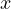

to
to
 .
.
As you might have already guessed, we deal with discrete functions rather
than continuous ones in discrete calculus. A rather peculiar idea comes to
mind here: integrating such a function. Let us consider a simple function
; then, in classical calculus, we can easily integrate it from to
.
| (1) |
However, what if we limit the function and accept only integer ? Then, the integration becomes a summation, which is more complicated.
| (2) |
While some might find the latter simpler to understand, when we consider a more complicated equation, it becomes way harder than anticipated. Consider the function .
| (3) |
| (4) |
The equations look similar. However, the discrete version needs to adjust for all the non-integer values, which makes the equation more complicated. Ironically, it is simpler to calculate an infinite sum of infinitely small segments of a function than to sum a discrete number of values.
Sometimes, it is simpler to prove that a given equation works using induction than to find it. Consider, for example, the following equation.
| (5) |
It is quite simple to prove using induction. Let  be defined as the sum of the first
be defined as the sum of the first
 natural numbers; then we can say the following.
natural numbers; then we can say the following.
| (6) |
With a similar method, it is simple to prove that,
| (7) |
Again, let be the sum of the first squares, then we can use induction, assuming is bound by the equation above.
(8) |
Just like in classical calculus, one must first understand the concept of a derivative before understanding integration. In classical calculus, one would define a derivative in the following way.
| (9) |
However, in discrete calculus, the smallest step one can make is . Thus, a discrete version of a derivative will look as follows.
| (10) |
Usually, instead of saying discrete derivative, it is called the forward difference operator. Consider that; what about higher-order derivates? Then, notice that a second-order derivative would look as follows.
(11) |
 -th
order discrete derivative? As we will come to see, a formula does indeed
exist.
-th
order discrete derivative? As we will come to see, a formula does indeed
exist.
| (12) |
It is quite simple to see if we employ induction. Obviously, the statement is true for
. Let this serve as the base of the induction; now, assume the statement
is true for  , then one can prove that it works for as follows.
, then one can prove that it works for as follows.
![[ ]
n+1 n n∑ n-i(n )
Δ f(x) = Δ (Δ f (x)) = (- 1) i f(x+ 1 +i) -
[ ( ) ] i=0 ( ) ( )
∑n n-i n n n n∑ n-i+1 n
(- 1) i f(x + i) = - (- 1) 0 f(x)+ (- 1) i- 1 f(x+i )-
i=0 n ( ) i=1 ( )
∑ (- 1)n-i n f (x + i) +(- 1)0 n f(x +n + 1)
i=1 i n](discrete_calculus27x.png) | (13) |
(14) |
Seeing the analog of in Discrete Calculus is interesting. Does there exist
such a constant  , such that ? As it turns out, there does,
2.
, such that ? As it turns out, there does,
2.
| (15) |
Many properties of classical calculus about derivatives, such as the Product/Quotient Rule, have analogs in discrete calculus. First, the obvious ones,
(16) (17) |
| (18) |
The understanding is the same as that of classical calculus; we only got an extra term because terms are not infinitely small, as in classical calculus. Similarly, we have the Discrete Quotient Rule.
| (19) |
And again, this can be proven the exact same way it is proven in classical calculus, with only some minor changes.
Just as in normal calculus, such a thing as a discrete antiderivative exists. As in classical calculus, it is defined similarly.
| (20) |
Just as in classical calculus, it is tightly related to discrete integrals through the Fundamental Theorem of Discrete Calculus.
| (21) |
This can be proven in the exact same way the fundamental theorem of calculus is proven; I will leave this as an exercise for the reader.
In classical calculus, there is a very simple formula for calculating an antiderivative of a polynomial, as follows.
| (22) |
It would be useful to compute the discrete antiderivatives for polynomials as well.
However, first, let us introduce some useful terminology. A falling factorial of  is
called the following.
is
called the following.
| (23) |
Sometimes, it might be called the  -th Pochhammer Polynomial. This function is
wonderful because it satisfies the following requirements.
-th Pochhammer Polynomial. This function is
wonderful because it satisfies the following requirements.
| (24) |
This can be seen through some trivial calculations.
(25) (26) (27) |
Find the dominant coefficient  of the polynomial
of the polynomial  .
.
Subtract from  the value , where
the value , where  is the degree of
is the degree of  .
.
Go to step one with the updated polynomial .
In the end, one will get the following system of equations.
From which, ones sees that . For example, convert into the falling factorial polynomial form. From here we see that . As an example, this knowledge is already enough to compute the sum of the first cubes . One must first change the expression into the falling factorial polynomial form from the equation (25). Thus, we see that . From here, all that is left is to integrate the expression.(28) |
| (29) |
With the same technique, discrete integrals of any polynomial can be found, even more than we originally hoped.
Generally speaking, the topic of discrete calculus has a lot of connections with stirring numbers; for example, the following holds true:
| (30) |
This can be used to prove various identities with falling factorials. Specifically, this relation shows us that instead of the tedious method described earlier for expressing a polynomial using a Pochhammer polynomial, it is important to note that in practice if one does not have access to machine calculations, the method described before is better. I will not explain this in this article; I will leave this for another time.
I hope that you have found the given material interesting and useful. Discrete Calculus is quite an exotic and fascinating topic in mathematics.